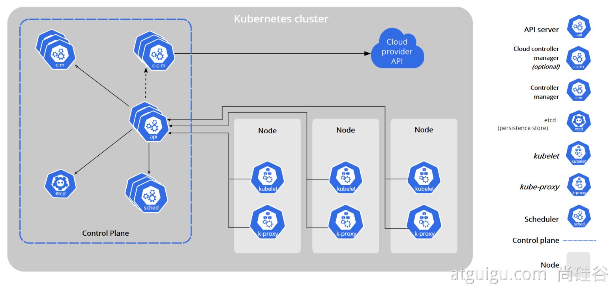
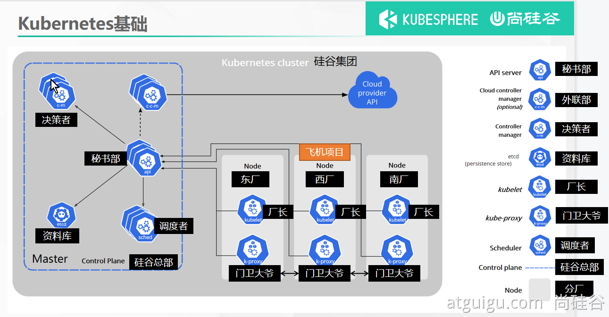
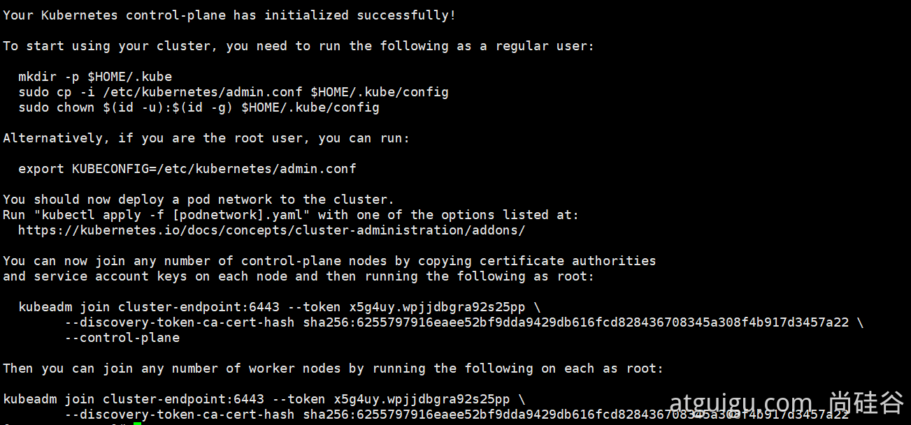
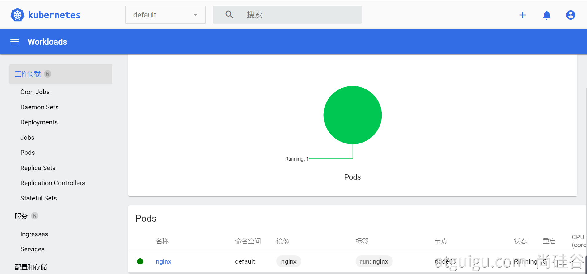

Kubernetes基本概念
1. Kubernetes 是什么？

我们急需一个大规模容器编排系统
kubernetes具有以下特性：
- 服务发现和负载均衡 Kubernetes 可以使用 DNS 名称或自己的 IP 地址公开容器，如果进入容器的流量很大， Kubernetes 可以负载均衡并分配网络流量，从而使部署稳定。
- 存储编排 Kubernetes 允许你自动挂载你选择的存储系统，例如本地存储、公共云提供商等。
- 自动部署和回滚 你可以使用 Kubernetes 描述已部署容器的所需状态，它可以以受控的速率将实际状态 更改为期望状态。例如，你可以自动化 Kubernetes 来为你的部署创建新容器， 删除现有容器并将它们的所有资源用于新容器。
- 自动完成装箱计算 Kubernetes 允许你指定每个容器所需 CPU 和内存（RAM）。 当容器指定了资源请求时，Kubernetes 可以做出更好的决策来管理容器的资源。
- 自我修复 Kubernetes 重新启动失败的容器、替换容器、杀死不响应用户定义的 运行状况检查的容器，并且在准备好服务之前不将其通告给客户端。
- 密钥与配置管理 Kubernetes 允许你存储和管理敏感信息，例如密码、OAuth 令牌和 ssh 密钥。 你可以在不重建容器镜像的情况下部署和更新密钥和应用程序配置，也无需在堆栈配置中暴露密钥。
Kubernetes 为你提供了一个可弹性运行分布式系统的框架。 Kubernetes 会满足你的扩展要求、故障转移、部署模式等。 例如，Kubernetes 可以轻松管理系统的 Canary 部署。
2. 架构
2.1 工作方式
Kubernetes Cluster = N Master Node + N Worker Node：N主节点+N工作节点； N>=1
2.2 组件架构

1、控制平面组件（Control Plane Components）
控制平面的组件对集群做出全局决策(比如调度)，以及检测和响应集群事件（例如，当不满足部署的 replicas 字段时，启动新的 pod）。
控制平面组件可以在集群中的任何节点上运行。 然而，为了简单起见，设置脚本通常会在同一个计算机上启动所有控制平面组件， 并且不会在此计算机上运行用户容器。 请参阅使用 kubeadm 构建高可用性集群 中关于多 VM 控制平面设置的示例。
kube-apiserver
API 服务器是 Kubernetes 控制面的组件， 该组件公开了 Kubernetes API。 API 服务器是 Kubernetes 控制面的前端。
Kubernetes API 服务器的主要实现是 kube-apiserver。 kube-apiserver 设计上考虑了水平伸缩，也就是说，它可通过部署多个实例进行伸缩。 你可以运行 kube-apiserver 的多个实例，并在这些实例之间平衡流量。
etcd
etcd 是兼具一致性和高可用性的键值数据库，可以作为保存 Kubernetes 所有集群数据的后台数据库。
您的 Kubernetes 集群的 etcd 数据库通常需要有个备份计划。
要了解 etcd 更深层次的信息，请参考 etcd 文档。
kube-scheduler
控制平面组件，负责监视新创建的、未指定运行节点（node）的 Pods，选择节点让 Pod 在上面运行。
调度决策考虑的因素包括单个 Pod 和 Pod 集合的资源需求、硬件/软件/策略约束、亲和性和反亲和性规范、数据位置、工作负载间的干扰和最后时限。
kube-controller-manager
在主节点上运行 控制器 的组件。
从逻辑上讲，每个控制器都是一个单独的进程， 但是为了降低复杂性，它们都被编译到同一个可执行文件，并在一个进程中运行。
这些控制器包括:
- 节点控制器（Node Controller）: 负责在节点出现故障时进行通知和响应
- 任务控制器（Job controller）: 监测代表一次性任务的 Job 对象，然后创建 Pods 来运行这些任务直至完成
- 端点控制器（Endpoints Controller）: 填充端点(Endpoints)对象(即加入 Service 与 Pod)
- 服务帐户和令牌控制器（Service Account & Token Controllers）: 为新的命名空间创建默认帐户和 API 访问令牌
cloud-controller-manager
云控制器管理器是指嵌入特定云的控制逻辑的 控制平面组件。 云控制器管理器允许您链接集群到云提供商的应用编程接口中， 并把和该云平台交互的组件与只和您的集群交互的组件分离开。
cloud-controller-manager 仅运行特定于云平台的控制回路。 如果你在自己的环境中运行 Kubernetes，或者在本地计算机中运行学习环境， 所部署的环境中不需要云控制器管理器。
与 kube-controller-manager 类似，cloud-controller-manager 将若干逻辑上独立的 控制回路组合到同一个可执行文件中，供你以同一进程的方式运行。 你可以对其执行水平扩容（运行不止一个副本）以提升性能或者增强容错能力。
下面的控制器都包含对云平台驱动的依赖：
- 节点控制器（Node Controller）: 用于在节点终止响应后检查云提供商以确定节点是否已被删除
- 路由控制器（Route Controller）: 用于在底层云基础架构中设置路由
- 服务控制器（Service Controller）: 用于创建、更新和删除云提供商负载均衡器
2、Node 组件
节点组件在每个节点上运行，维护运行的 Pod 并提供 Kubernetes 运行环境。
kubelet
一个在集群中每个节点（node）上运行的代理。 它保证容器（containers）都 运行在 Pod 中。
kubelet 接收一组通过各类机制提供给它的 PodSpecs，确保这些 PodSpecs 中描述的容器处于运行状态且健康。 kubelet 不会管理不是由 Kubernetes 创建的容器。
kube-proxy
kube-proxy 是集群中每个节点上运行的网络代理， 实现 Kubernetes 服务（Service） 概念的一部分。
kube-proxy 维护节点上的网络规则。这些网络规则允许从集群内部或外部的网络会话与 Pod 进行网络通信。
如果操作系统提供了数据包过滤层并可用的话，kube-proxy 会通过它来实现网络规则。否则， kube-proxy 仅转发流量本身。

3. kubeadm创建集群
请参照以前Docker安装。先提前为所有机器安装Docker
3.1 安装kubeadm
- 一台兼容的 Linux 主机。Kubernetes 项目为基于 Debian 和 Red Hat 的 Linux 发行版以及一些不提供包管理器的发行版提供通用的指令
- 每台机器 2 GB 或更多的 RAM （如果少于这个数字将会影响你应用的运行内存)
- 2 CPU 核或更多
集群中的所有机器的网络彼此均能相互连接(公网和内网都可以)
- 设置防火墙放行规则
节点之中不可以有重复的主机名、MAC 地址或 product_uuid。请参见这里了解更多详细信息。
- 设置不同hostname
开启机器上的某些端口。请参见这里 了解更多详细信息。
- 内网互信
禁用交换分区。为了保证 kubelet 正常工作，你 必须 禁用交换分区。
- 永久关闭
3.1.1 基础环境
所有机器执行以下操作
#各个机器设置自己的域名
hostnamectl set-hostname xxxx
# 将 SELinux 设置为 permissive 模式（相当于将其禁用）
sudo setenforce 0
sudo sed -i 's/^SELINUX=enforcing$/SELINUX=permissive/' /etc/selinux/config
#关闭swap
swapoff -a
sed -ri 's/.*swap.*/#&/' /etc/fstab
#允许 iptables 检查桥接流量
cat <<EOF | sudo tee /etc/modules-load.d/k8s.conf
br_netfilter
EOF
cat <<EOF | sudo tee /etc/sysctl.d/k8s.conf
net.bridge.bridge-nf-call-ip6tables = 1
net.bridge.bridge-nf-call-iptables = 1
EOF
sudo sysctl --system
3.1.2 安装kubelet、kubeadm、kubectl
cat <<EOF | sudo tee /etc/yum.repos.d/kubernetes.repo
[kubernetes]
name=Kubernetes
baseurl=http://mirrors.aliyun.com/kubernetes/yum/repos/kubernetes-el7-x86_64
enabled=1
gpgcheck=0
repo_gpgcheck=0
gpgkey=http://mirrors.aliyun.com/kubernetes/yum/doc/yum-key.gpg
http://mirrors.aliyun.com/kubernetes/yum/doc/rpm-package-key.gpg
exclude=kubelet kubeadm kubectl
EOF
sudo yum install -y kubelet-1.20.9 kubeadm-1.20.9 kubectl-1.20.9 --disableexcludes=kubernetes
sudo systemctl enable --now kubelet
kubelet 现在每隔几秒就会重启，因为它陷入了一个等待 kubeadm 指令的死循环
3.2 使用kubeadm引导集群
3.2.1 下载各个机器需要的镜像
sudo tee ./images.sh <<-'EOF'
#!/bin/bash
images=(
kube-apiserver:v1.20.9
kube-proxy:v1.20.9
kube-controller-manager:v1.20.9
kube-scheduler:v1.20.9
coredns:1.7.0
etcd:3.4.13-0
pause:3.2
)
for imageName in ${images[@]} ; do
docker pull registry.cn-hangzhou.aliyuncs.com/lfy_k8s_images/$imageName
done
EOF
chmod +x ./images.sh && ./images.sh
3.2.2 初始化主节点
#所有机器添加master域名映射，以下需要修改为自己的
echo "172.31.0.4 cluster-endpoint" >> /etc/hosts
#主节点初始化
kubeadm init \
--apiserver-advertise-address=172.31.0.4 \
--control-plane-endpoint=cluster-endpoint \
--image-repository registry.cn-hangzhou.aliyuncs.com/lfy_k8s_images \
--kubernetes-version v1.20.9 \
--service-cidr=10.96.0.0/16 \
--pod-network-cidr=192.168.0.0/16
#所有网络范围不重叠
Your Kubernetes control-plane has initialized successfully!
To start using your cluster, you need to run the following as a regular user:
mkdir -p $HOME/.kube
sudo cp -i /etc/kubernetes/admin.conf $HOME/.kube/config
sudo chown $(id -u):$(id -g) $HOME/.kube/config
Alternatively, if you are the root user, you can run:
export KUBECONFIG=/etc/kubernetes/admin.conf
You should now deploy a pod network to the cluster.
Run "kubectl apply -f [podnetwork].yaml" with one of the options listed at:
https://kubernetes.io/docs/concepts/cluster-administration/addons/
You can now join any number of control-plane nodes by copying certificate authorities
and service account keys on each node and then running the following as root:
kubeadm join cluster-endpoint:6443 --token hums8f.vyx71prsg74ofce7 \
--discovery-token-ca-cert-hash sha256:a394d059dd51d68bb007a532a037d0a477131480ae95f75840c461e85e2c6ae3 \
--control-plane
Then you can join any number of worker nodes by running the following on each as root:
kubeadm join cluster-endpoint:6443 --token hums8f.vyx71prsg74ofce7 \
--discovery-token-ca-cert-hash sha256:a394d059dd51d68bb007a532a037d0a477131480ae95f75840c461e85e2c6ae3
#查看集群所有节点
kubectl get nodes
#根据配置文件，给集群创建资源
kubectl apply -f xxxx.yaml
#查看集群部署了哪些应用？
docker ps === kubectl get pods -A
# 运行中的应用在docker里面叫容器，在k8s里面叫Pod
kubectl get pods -A
3.2.3 根据提示继续
master成功后提示如下：

设置.kube/config
复制上面命令
安装网络组件
curl https://docs.projectcalico.org/v3.20/manifests/calico.yaml -O kubectl apply -f calico.yaml
3.2.4 加入node节点
kubeadm join cluster-endpoint:6443 --token x5g4uy.wpjjdbgra92s25pp \
--discovery-token-ca-cert-hash sha256:6255797916eaee52bf9dda9429db616fcd828436708345a308f4b917d3457a22
获取新令牌
kubeadm token create --print-join-command
高可用部署方式，也是在这一步的时候，使用添加主节点的命令即可
3.2.5 验证集群
验证集群节点状态
- kubectl get nodes
3.2.6 部署dashboard
部署
kubernetes官方提供的可视化界面
kubectl apply -f https://raw.githubusercontent.com/kubernetes/dashboard/v2.3.1/aio/deploy/recommended.yaml
# Copyright 2017 The Kubernetes Authors.
#
# Licensed under the Apache License, Version 2.0 (the "License");
# you may not use this file except in compliance with the License.
# You may obtain a copy of the License at
#
# http://www.apache.org/licenses/LICENSE-2.0
#
# Unless required by applicable law or agreed to in writing, software
# distributed under the License is distributed on an "AS IS" BASIS,
# WITHOUT WARRANTIES OR CONDITIONS OF ANY KIND, either express or implied.
# See the License for the specific language governing permissions and
# limitations under the License.
apiVersion: v1
kind: Namespace
metadata:
name: kubernetes-dashboard
---
apiVersion: v1
kind: ServiceAccount
metadata:
labels:
k8s-app: kubernetes-dashboard
name: kubernetes-dashboard
namespace: kubernetes-dashboard
---
kind: Service
apiVersion: v1
metadata:
labels:
k8s-app: kubernetes-dashboard
name: kubernetes-dashboard
namespace: kubernetes-dashboard
spec:
ports:
- port: 443
targetPort: 8443
selector:
k8s-app: kubernetes-dashboard
---
apiVersion: v1
kind: Secret
metadata:
labels:
k8s-app: kubernetes-dashboard
name: kubernetes-dashboard-certs
namespace: kubernetes-dashboard
type: Opaque
---
apiVersion: v1
kind: Secret
metadata:
labels:
k8s-app: kubernetes-dashboard
name: kubernetes-dashboard-csrf
namespace: kubernetes-dashboard
type: Opaque
data:
csrf: ""
---
apiVersion: v1
kind: Secret
metadata:
labels:
k8s-app: kubernetes-dashboard
name: kubernetes-dashboard-key-holder
namespace: kubernetes-dashboard
type: Opaque
---
kind: ConfigMap
apiVersion: v1
metadata:
labels:
k8s-app: kubernetes-dashboard
name: kubernetes-dashboard-settings
namespace: kubernetes-dashboard
---
kind: Role
apiVersion: rbac.authorization.k8s.io/v1
metadata:
labels:
k8s-app: kubernetes-dashboard
name: kubernetes-dashboard
namespace: kubernetes-dashboard
rules:
# Allow Dashboard to get, update and delete Dashboard exclusive secrets.
- apiGroups: [""]
resources: ["secrets"]
resourceNames: ["kubernetes-dashboard-key-holder", "kubernetes-dashboard-certs", "kubernetes-dashboard-csrf"]
verbs: ["get", "update", "delete"]
# Allow Dashboard to get and update 'kubernetes-dashboard-settings' config map.
- apiGroups: [""]
resources: ["configmaps"]
resourceNames: ["kubernetes-dashboard-settings"]
verbs: ["get", "update"]
# Allow Dashboard to get metrics.
- apiGroups: [""]
resources: ["services"]
resourceNames: ["heapster", "dashboard-metrics-scraper"]
verbs: ["proxy"]
- apiGroups: [""]
resources: ["services/proxy"]
resourceNames: ["heapster", "http:heapster:", "https:heapster:", "dashboard-metrics-scraper", "http:dashboard-metrics-scraper"]
verbs: ["get"]
---
kind: ClusterRole
apiVersion: rbac.authorization.k8s.io/v1
metadata:
labels:
k8s-app: kubernetes-dashboard
name: kubernetes-dashboard
rules:
# Allow Metrics Scraper to get metrics from the Metrics server
- apiGroups: ["metrics.k8s.io"]
resources: ["pods", "nodes"]
verbs: ["get", "list", "watch"]
---
apiVersion: rbac.authorization.k8s.io/v1
kind: RoleBinding
metadata:
labels:
k8s-app: kubernetes-dashboard
name: kubernetes-dashboard
namespace: kubernetes-dashboard
roleRef:
apiGroup: rbac.authorization.k8s.io
kind: Role
name: kubernetes-dashboard
subjects:
- kind: ServiceAccount
name: kubernetes-dashboard
namespace: kubernetes-dashboard
---
apiVersion: rbac.authorization.k8s.io/v1
kind: ClusterRoleBinding
metadata:
name: kubernetes-dashboard
roleRef:
apiGroup: rbac.authorization.k8s.io
kind: ClusterRole
name: kubernetes-dashboard
subjects:
- kind: ServiceAccount
name: kubernetes-dashboard
namespace: kubernetes-dashboard
---
kind: Deployment
apiVersion: apps/v1
metadata:
labels:
k8s-app: kubernetes-dashboard
name: kubernetes-dashboard
namespace: kubernetes-dashboard
spec:
replicas: 1
revisionHistoryLimit: 10
selector:
matchLabels:
k8s-app: kubernetes-dashboard
template:
metadata:
labels:
k8s-app: kubernetes-dashboard
spec:
containers:
- name: kubernetes-dashboard
image: kubernetesui/dashboard:v2.3.1
imagePullPolicy: Always
ports:
- containerPort: 8443
protocol: TCP
args:
- --auto-generate-certificates
- --namespace=kubernetes-dashboard
# Uncomment the following line to manually specify Kubernetes API server Host
# If not specified, Dashboard will attempt to auto discover the API server and connect
# to it. Uncomment only if the default does not work.
# - --apiserver-host=http://my-address:port
volumeMounts:
- name: kubernetes-dashboard-certs
mountPath: /certs
# Create on-disk volume to store exec logs
- mountPath: /tmp
name: tmp-volume
livenessProbe:
httpGet:
scheme: HTTPS
path: /
port: 8443
initialDelaySeconds: 30
timeoutSeconds: 30
securityContext:
allowPrivilegeEscalation: false
readOnlyRootFilesystem: true
runAsUser: 1001
runAsGroup: 2001
volumes:
- name: kubernetes-dashboard-certs
secret:
secretName: kubernetes-dashboard-certs
- name: tmp-volume
emptyDir: {}
serviceAccountName: kubernetes-dashboard
nodeSelector:
"kubernetes.io/os": linux
# Comment the following tolerations if Dashboard must not be deployed on master
tolerations:
- key: node-role.kubernetes.io/master
effect: NoSchedule
---
kind: Service
apiVersion: v1
metadata:
labels:
k8s-app: dashboard-metrics-scraper
name: dashboard-metrics-scraper
namespace: kubernetes-dashboard
spec:
ports:
- port: 8000
targetPort: 8000
selector:
k8s-app: dashboard-metrics-scraper
---
kind: Deployment
apiVersion: apps/v1
metadata:
labels:
k8s-app: dashboard-metrics-scraper
name: dashboard-metrics-scraper
namespace: kubernetes-dashboard
spec:
replicas: 1
revisionHistoryLimit: 10
selector:
matchLabels:
k8s-app: dashboard-metrics-scraper
template:
metadata:
labels:
k8s-app: dashboard-metrics-scraper
annotations:
seccomp.security.alpha.kubernetes.io/pod: 'runtime/default'
spec:
containers:
- name: dashboard-metrics-scraper
image: kubernetesui/metrics-scraper:v1.0.6
ports:
- containerPort: 8000
protocol: TCP
livenessProbe:
httpGet:
scheme: HTTP
path: /
port: 8000
initialDelaySeconds: 30
timeoutSeconds: 30
volumeMounts:
- mountPath: /tmp
name: tmp-volume
securityContext:
allowPrivilegeEscalation: false
readOnlyRootFilesystem: true
runAsUser: 1001
runAsGroup: 2001
serviceAccountName: kubernetes-dashboard
nodeSelector:
"kubernetes.io/os": linux
# Comment the following tolerations if Dashboard must not be deployed on master
tolerations:
- key: node-role.kubernetes.io/master
effect: NoSchedule
volumes:
- name: tmp-volume
emptyDir: {}
设置访问端口
kubectl edit svc kubernetes-dashboard -n kubernetes-dashboardtype: ClusterIP 改为 type: NodePort
kubectl edit svc kubernetes-dashboard -n kubernetes-dashboard
创建访问账号
#创建访问账号，准备一个yaml文件； vi dash.yaml apiVersion: v1 kind: ServiceAccount metadata: name: admin-user namespace: kubernetes-dashboard --- apiVersion: rbac.authorization.k8s.io/v1 kind: ClusterRoleBinding metadata: name: admin-user roleRef: apiGroup: rbac.authorization.k8s.io kind: ClusterRole name: cluster-admin subjects: - kind: ServiceAccount name: admin-user namespace: kubernetes-dashboardkubectl apply -f dash.yaml令牌访问
```shell
获取访问令牌
kubectl -n kubernetes-dashboard get secret $(kubectl -n kubernetes-dashboard get sa/admin-user -o jsonpath="{.secrets[0].name}") -o go-template="{{.data.token | base64decode}}"
```shell
eyJhbGciOiJSUzI1NiIsImtpZCI6InpXSkU0TjhCUmVKQzBJaC03Nk9ES2NMZ1daRTRmQ1FMZU9rRUJ3VXRnM3MifQ.eyJpc3MiOiJrdWJlcm5ldGVzL3NlcnZpY2VhY2NvdW50Iiwia3ViZXJuZXRlcy5pby9zZXJ2aWNlYWNjb3VudC9uYW1lc3BhY2UiOiJrdWJlcm5ldGVzLWRhc2hib2FyZCIsImt1YmVybmV0ZXMuaW8vc2VydmljZWFjY291bnQvc2VjcmV0Lm5hbWUiOiJhZG1pbi11c2VyLXRva2VuLXgyczhmIiwia3ViZXJuZXRlcy5pby9zZXJ2aWNlYWNjb3VudC9zZXJ2aWNlLWFjY291bnQubmFtZSI6ImFkbWluLXVzZXIiLCJrdWJlcm5ldGVzLmlvL3NlcnZpY2VhY2NvdW50L3NlcnZpY2UtYWNjb3VudC51aWQiOiIzOTZmYjdlNS0wMjA2LTQxMjctOGQzYS0xMzRlODVmYjU0MDAiLCJzdWIiOiJzeXN0ZW06c2VydmljZWFjY291bnQ6a3ViZXJuZXRlcy1kYXNoYm9hcmQ6YWRtaW4tdXNlciJ9.Hf5mhl35_R0iBfBW7fF198h_klEnN6pRKfk_roAzOtAN-Aq21E4804PUhe9Rr9e_uFzLfoFDXacjJrHCuhiML8lpHIfJLK_vSD2pZNaYc2NWZq2Mso-BMGpObxGA23hW0nLQ5gCxlnxIAcyE76aYTAB6U8PxpvtVdgUknBVrwXG8UC_D8kHm9PTwa9jgbZfSYAfhOHWmZxNYo7CF2sHH-AT_WmIE8xLmB7J11vDzaunv92xoUoI0ju7OBA2WRr61bOmSd8WJgLCDcyBblxz4Wa-3zghfKlp0Rgb8l56AAI7ML_snF59X6JqaCuAcCJjIu0FUTS5DuyIObEeXY-z-Rw
界面
